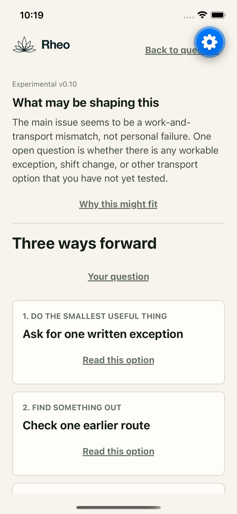
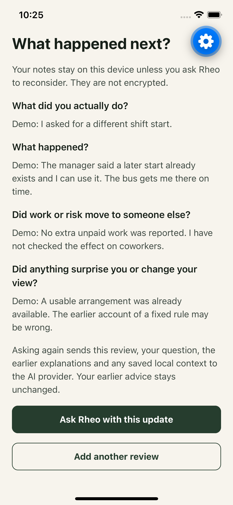
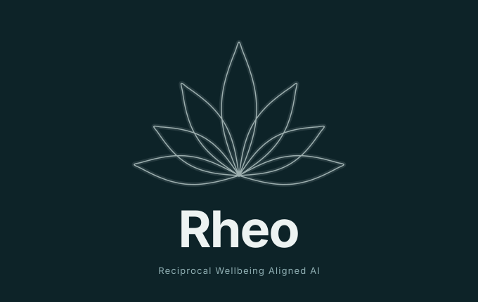

Needs come first
Safety, affordability and urgent needs matter now. People should not have to repair the systems that harmed them to deserve help.
Experimental AI decision companion
Find a practical next step.
Keep the choice yours.
Describe a difficulty. Explore three possible ways forward. Choose what to try, then reflect on what happened.
Early private testing. This website introduces the project; it is not the app.
What works today
Rheo offers three kinds of option: do the smallest useful thing, find something out, or open a pathway. You can choose one, write your own, or decide not yet.
Speak or type in your own words. You can ask for nearby possibilities using approximate location. Location is optional, and a listing is not proof that a service is suitable or available.
With your separate approval, Rheo can research public information or prepare a draft or checklist. It does not send messages, book, buy or act on your behalf.
Save a decision or a private pathway on your phone. Record what you tried, what changed, and whether work or risk fell on someone else. Ask for revised options when you are ready.
Development screenshots use a made-up work and transport situation. They show an experiment, not evidence that Rheo improves outcomes.


The idea behind Rheo

Our wellbeing depends on one another and on the living world. Rheo starts from a simple question: can meeting a need now also strengthen the relationships and resources that make life possible?
The longer-term vision is a gift-based, community-governed economy: care, repair, skills and resources shared without making help a debt or something people must earn.
Rheocracy is the guiding idea: organise around reciprocal wellbeing, with people shaping the choices that affect them. AI should support that process, not govern it.
This is a direction to explore, not a result we have demonstrated. The current app is a personal decision companion. A shared community network, mesh messaging and a public resource map are not built into it.
What must stay true
Safety, affordability and urgent needs matter now. People should not have to repair the systems that harmed them to deserve help.
No moral score, hidden ranking of people or obligation to give back. Saying no, changing your mind and doing nothing remain options.
Care and sharing need time, money and maintenance. Local or voluntary provision is not automatically better. Costs, limits and unpaid work must be named.
Limits and privacy
Rheo can be wrong. It is not a proven intervention, an emergency service or a replacement for qualified advice. It is not ready for sensitive situations or places where surveillance could put people at risk.
App requests go through Render to OpenAI. Saved decisions and pathways stay on your device, but their app storage is not encrypted. Voice and optional local searches can involve other providers.
No accounts, cloud sync, advertising, wellbeing scores or background location tracking. Private app testing uses an invitation code.
Read the privacy notesWork with us
I am Iwan Brioc, developing Rheo. I am looking for community organisers, cooperative technologists, researchers and funders who want to test this idea carefully.
A useful next step is a small, community-led pilot with paid participation, privacy and safety review, and a clear way to learn whether it helps. No outcomes are promised.
I can share a private demo and discuss where our work might meet.
Contact Iwan